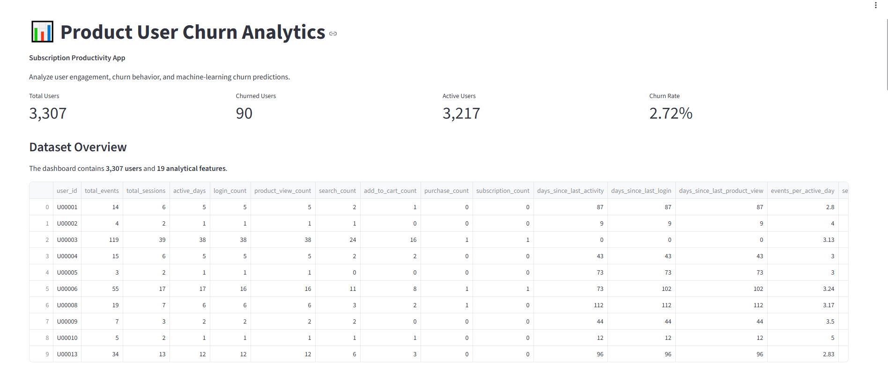

An end-to-end portfolio project combining Python, SQL, ETL, product analytics, machine learning, model evaluation, automated testing, and an interactive Streamlit dashboard.
The project demonstrates how raw product event data can be transformed into actionable product analytics and a machine-learning based churn risk-ranking system.
Identify users showing behavioral signals associated with future churn so product and retention teams can prioritize analysis and potential interventions.
Raw event data is cleaned, validated, transformed through an ETL pipeline, and loaded into SQLite for analytical SQL workflows.
Logistic Regression and Random Forest models are evaluated using metrics appropriate for highly imbalanced churn classification.
The project combines product analytics with machine learning to identify behavioral signals associated with future churn and support retention prioritization.
5,000 users and more than 229,000 product events were generated and processed through the ETL pipeline.
3,307 eligible users with 17 predictive features were used for churn modeling.
90 churners and 3,217 non-churners produced a churn rate of 2.72%, creating a highly imbalanced classification problem.
Churned users showed lower average engagement and substantially higher activity recency. Subscription history, activity recency, and purchase-related features were important model signals. The subscription_count result has an important synthetic-data caveat because the churn definition is tied to cancellation after subscription.
The workflow connects data generation, ETL, SQL analytics, feature engineering, machine learning, evaluation, and dashboarding.
User behavior is summarized through engagement, session, conversion, and recency features.
The target is highly imbalanced, with churn representing only 2.72% of eligible users. The project therefore emphasizes ROC-AUC, PR-AUC, precision, recall, and threshold analysis rather than accuracy alone.
Subscription history was the strongest feature, but it has an important synthetic-data caveat: the churn definition is based on cancellation after subscription. Activity recency and purchase-related behavior also provide predictive signal. Feature importance indicates model contribution, not causation.
The dashboard uses the Random Forest output as a relative risk score rather than a literal calibrated probability. Thresholds can be adjusted to explore the trade-off between identifying potential churners and targeting additional users.
The Streamlit dashboard brings together product KPIs, churn analysis, model performance, feature importance, risk segmentation, and user-level risk exploration.

Eight automated tests cover ETL behavior and ML dataset validation.
GitHub Actions automatically runs the project test suite.
The project contains scripts, requirements, SQL, notebooks, documentation, and validation workflows.
This is a production-style portfolio prototype using synthetic data. A production implementation would require real product data, a business-approved churn definition, point-in-time feature generation, time-based validation, leakage auditing, probability calibration, model monitoring, data-quality monitoring, and controlled experiments to measure whether retention interventions actually reduce churn.